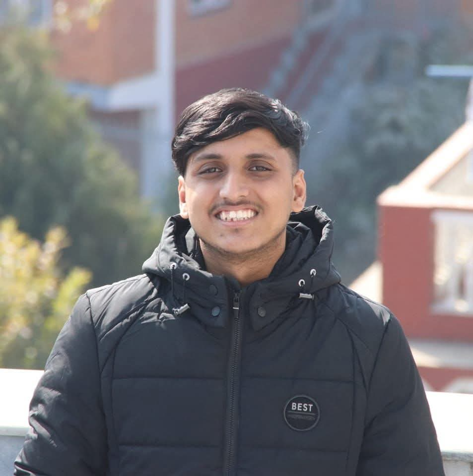
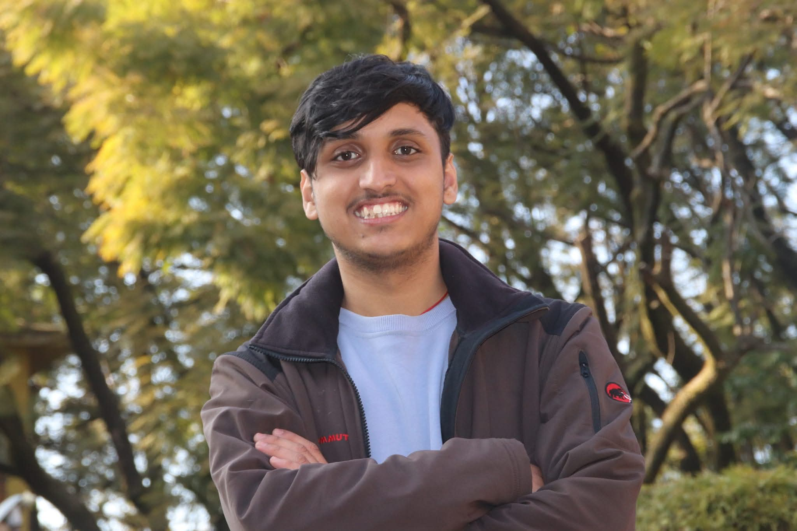

Hydropower & Hydrology
Run-of-river design flows, flow duration curves and hydropower potential.
WELCOME TO MY PORTFOLIO
Civil Engineering | Water Resources | Machine Learning
HELLO, I'M
Hydrology, Hydropower & Machine Learning for Water Resources


I am a final-year Civil Engineering student at IOE Thapathali Campus, Tribhuvan University, graduating in July 2027. My work is in hydrology and hydropower, with a focus on using machine learning to fill gaps in river discharge records and to estimate flow in basins with little or no data.
My final year project applies streamflow regionalization and sensitivity analysis to hydropower potential in the Daraudi River Basin. Alongside it, I build Python tools for hydrological data quality control. Earlier, I designed and tested earthquake engineering models, including a base-isolated building and a shake table.
Location: Kathmandu, Nepal
Currently: Final year project on streamflow regionalization for hydropower, Daraudi River Basin
Run-of-river design flows, flow duration curves and hydropower potential.
Gap-filling, outlier detection and prediction in ungauged basins.
CMIP6 scenarios applied to future streamflow and hydropower.
Earthquake models, shake table testing and vibration control.
IOE, Thapathali Campus, Tribhuvan University
Kathmandu, Nepal
Final year | Expected graduation: July 2027
Relevant coursework
I study how machine learning and regional hydrological methods can predict streamflow where records are short, noisy or missing, and how that uncertainty affects run-of-river hydropower design. My core work covers ungauged basin prediction, streamflow regionalization, hydrological gap-filling and machine learning hydrology, supported by uncertainty and sensitivity analysis, flow duration curves, and climate change impacts using CMIP6 projections.
My wider interests are Himalayan hydrology and snowmelt modeling, hydroinformatics, hybrid physics-ML modeling, remote sensing hydrology and flood frequency analysis. I am also interested in sediment transport, reservoir sedimentation, environmental flows, ecohydraulics, computational hydraulics, hydraulic structures, reservoir operation optimization, the water-energy-food nexus and transboundary water management.
Final Year Project (ongoing)
Estimating design flows for a basin with limited discharge data, and testing how those estimates change hydropower capacity and energy.
• Data quality: Comparison of gap-filling methods (XGBoost with PBIAS-based retraining, Random Forest, Structural Time Series, SOMs)
• Donor basins: Similarity finder using weighted Euclidean distance
• Regionalization: WECS/DHM method compared with ML (XGBoost, Structural Time Series, SOMs)
• Sensitivity analysis: Effect of donor and model choice, design discharge, environmental flow, head, efficiency and data quality on capacity and energy
• Climate change: CMIP6 scenarios (SSPs) to project future flow and hydropower
Supervisor: Er. Rajendra Bahadur Chettri
Competition Project | Winner
Designed and built a 90 cm tall building model combining base isolation and a tuned mass damper to reduce earthquake-induced vibration. Used a motion sensor with a calibrated Arduino Uno to measure the structure's vibration response.
Engineering Project
Designed and built a 65 cm × 65 cm dual-axis shake table with PID control to simulate earthquake ground motion for testing structural models.
Won a model competition with a base-isolated building using roller dampers and a tuned mass damper.
Organized at Thapathali Campus as Vice President of the Civil Engineering Student Society.
Civil Engineering Student Society, IOE Thapathali Campus
2026–Present
Lead student activities and coordinate events, including organizing inter-college model and shake table competitions at Thapathali Campus.
Aryan College of Engineering
Delivered a guest lecture to engineering students.
Email: dikshit.ioe@gmail.com
Kathmandu, Nepal